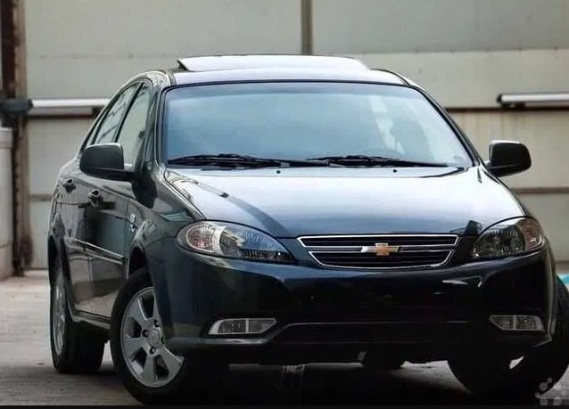
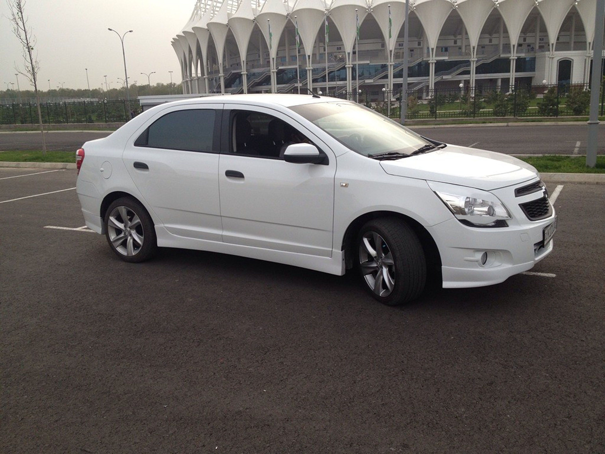
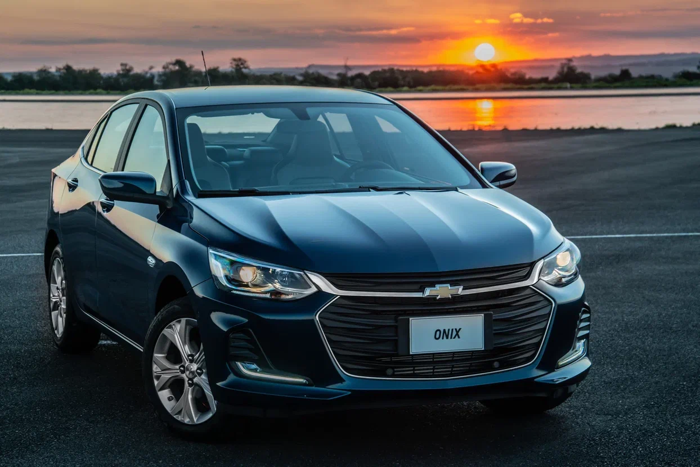

Gentra

Agar Sizga mashinaning tashqi ko‘rinishi muhim bo‘lsa, Gentra Sizga mos. Salobatli tashqi va ichki
ko‘rinishi
bo‘lgan ushbu avtomobilda har tomonlama mutanosiblik, silliq go‘zal shakli, ifodali chiziqlari uyg‘un
mujassamlashgan. Lacetti ning ixcham uslubli zamonaviy salonida besh kishi qulay joylashadi. Asboblar paneli
o‘z
mutanosibligi va turli-tuman xillari bilan ajralib turadi. Xrom qoplangan elementlari va asboblarining
joylashuvi puxta o‘ylab chiqilgan. Uning yurish xususiyatlari esa batafsil sinovdan o‘tkazilib, barkamol
darajasiga yetkazilgan.
Gentra kuzovining silliq zamonaviy dizayni — Pininfarina mashhur avtomobil atelesining yutug‘idir (Italiya).
Bodomqovoq ko‘zni eslatuvchi oldingi faralari va uzun silliq chiziqli qiyofasi uning yoqimli jozibador
ko‘rinishini hosil qiladi. Hashamatli dizayni va keng saloni bo‘lgan 4 eshikli Gentra — oddiygina oilaviy
sedan
emas, bu amaliyotga mos bo‘lgan avtomobil nuqsonlarga ega bo‘lmasligini oshkora ko‘rsatuvchi a’lo
mashinadir. U
har tomonlama sifatning o‘zginasi bo‘lib, juda ko‘p qo‘shimcha funksiyalari va a’lo boshqaruvchanlik
qobiliyatiga ega.
Cobalt

Chevrolet Cobalt – GM korporatsiyasining Braziliyadagi bo‘limining dizaynerlari tomonidan GM kompaniyasining
avtomobillarni ishlab chiqish standart global jarayonlaridan foydalangan holda ishlab chiqilgan oilaviy
sedan
modelidir. Cobalt modeli GM ning global guruhi tomonidan o‘z pog‘onasida jahon etaloniga aylanadigan va
o‘sib
rivojlanayotgan bozorlarda sotish bo‘yicha yetakchi bo‘la oladigan darajada ishlab chiqilgan. Chevrolet
Cobalt
qulaylik, nafislik va yuksak dinamik xususiyatlarni, hamda eskirmaydigan an’anaviy klassik dizayn qiyofasini
o‘zida mujassamlashtiradi. A’lo xavfsizlikni ta’minlash uchun, o‘ta mustahkam po‘latdan ishlab
chiqariladigan
Chevrolet Cobalt rusumli avtomobil, ABS (antibloklash tormoz tizimi) bilan, hamda haydovchi va oldingi
yo‘lovchi
uchun xavfsizlik yostiqchalari bilan jihozlangan.
Malibu 2

Chevrolet Malibu ning yangi avlodi ustida ishlagan dizaynerlar, modelning tashqi ko‘rinishiga ko‘proq
agressivlik baxsh etishga intilgan. Yangi modeli avvalgi avlodlaridan farqli ravishda tashqi ko‘rinishining
mutlaqo yangi shakliga ega. Bukiluvchan va egiluvchan chiziqlar borligi tufayli sedanning qiyofasi yanada
ko‘proq jo‘shqinlikka ega bo‘lib, o‘ta yoqimli shakliga ega. Malibu ning oson tanib olish mumkin bo‘lgan
firmaviy ikkitalik radiator panjarasi endilikda torroq shakldagi asosiy svetodiodli optika bilan
jihozlangan.
Kuzovning yon tomonlaridagi relefli bezaklari va orqa qismi ko‘p jihatdan Impala sedan modeliga o‘xshash,
umuman
olganda esa kuzovning ko‘pchilik elementlari afsonaviy Camaro modeliga o‘xshaydi, lekin bu faqat tashqi
o‘xshashlikdir. Bunda kuzovning ayrim detallarini puxta ishlab chiqish hisobiga, a’lo aerodinamik
ko‘rsatkichlarga erishishga muvaffaq bo‘ldik. O‘zbekiston bozorida avtomobil 4 xil rangda taklif qilinadi
(oq
marvarid, oq-kulrang, to‘q kulrang va qora ranglar).
Onix

Avtomobil zamonaviy dizayn va qulaylik bilan birga xavfsizlik boʻyicha eng ilg'or zamonaviy texnologiyalarni
ham taqdim etadi. 5 oʻrindiqli ushbu sedan sayohatlar uchun xoh u oilaviy xoh doʻstlar orasida yoki xizmat
safari bilan shaylangan xodim boʻlsin umuman, barcha-barcha uchun ham birdek ideal.
Oʻzining yorqin koʻrinishi bilan Chevrolet Onix yoʻllarda alohida taassurot uyg’otib, qulay haydashni
kafolatlaydi. Chevrolet Malibu avtomobili bilan oʻxshashligi yuqori toifadagi avtomobillardan qolishmaydigan
mustahkam va zamonaviy tashqi koʻrinish beradi.
UzAuto Motors kompaniyasining Bosh direktori Bo Andersson: “Oʻzgacha dadil eksteryer va yuqori texnologiyali
interyer dizayni oʻrta darajadagi avtomobil qanday boʻlishi mumkinligi haqidagi tasavvurni oʻzgartiradi”,
dedi. “Bu zamonaviy dizayn oʻzgacha bir katta boʻlishi shart emasligini namoyish etadi.
Top